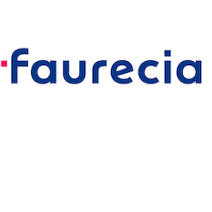

AS - Criminal Justice
Washtenaw Community College
Aug 2012 - Jul 2017
GPA: 3.0/4.0

Experience Highlights
LLamasoft | Customer Operations Techician | Oct 2020 - Present
• Assists internal users and external customers with installation, support, and license deployment.
• Provides first tier help desk support in customer installation troubleshooting of product offering.
• Utilize Salesforce.com to manage, track, and issue licenses for new purchases, renewals, partner projects, and training.

Army Michigan National Guard | Operations Assistant | Oct 2014 - Present
• Assist in the facilitation and planning of current and future operations for a 430-Soldier Battalion.
• Responsible for asset management, including electronic equipment repair and service.
• Compose Operations Orders to extend guidance to subordinate units.
• Develop leadership abilities through mentoring soldiers to uphold Army Doctrine & Regulations.

Ford Motor Company | Service & Engineering Operations Intern | Jun 2020 - Aug 2020
• Utilize R and Tableau to develop dashboards to analyze and visualize sales and marketing data.
• Integrate HTML, CSS, and JavaScript to enhance appearance and quality of dashboard.
• Present work to management for continous improvement of working files and programs.
• Utilize Alteryx to automate various data management processes.

Faurecia Interior Systems | Financial Analyst Intern | Mar 2019 - Jun 2020
• Completed various reports/KPIs for internal analysis and decision making for a 1.4M sq ft plant.
• Performed asset management tasks on $178M of equipment, to properly account for new and existing assets or tooling.
• Develop and integrate Excel macros to semi-automate reporting, using VBA code.
• Prepared 12 month-end journal entries
Faurecia Interior Systems | Sales Analyst Intern | Jun 2018 - Mar 2019
• Utilized SAP to create pricing and scheduling agreements for production and service parts in 8 separate plants.
• Audited system data to ensure accuaracy of information.
• Completed various reports to analyze team performance and accuracy.
• Developed text and video work instructions to facilitate continuity after employee transistion
Skills
-
R, PHP, HTML/CSS, SQL, C#, Linux, MS Visual Basic
-
SAP, Salesforce.com, ADP, MySQL
-
Data Analysis, MS Excel, Tableau, Alteryx
-
Financial Analysis, Month-end Journal Entries, Risk Analysis
Volunteering
-

On-call Firefigher for Milford Township Fire & Rescue.

Mentored Freshmen at Eastern Michigan University to facilitate a smooth transition from highschool to college.